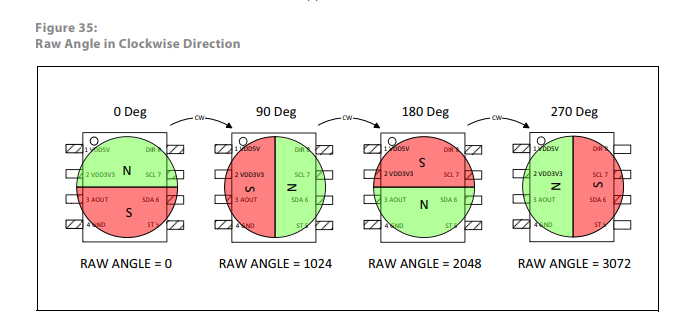

Sensor angular magnético AS5600
I2C
I²C (pronuncia-se “I-squared-C” ou “I-two-C”) é um barramento de comunicação serial que permite que dispositivos mestres enviem e recebam dados de dispositivos escravos. No nosso caso de uso, o mestre seria a placa Arduino e o dispositivo escravo seria um sensor.

Embora a velocidade de transmissão de dados através do I²C não seja muito rápida (~100 kbits/s), ele ocupa um número muito pequeno de conexões (apenas 2 fios SDA SCL!) para estabelecer uma conexão entre os dispositivos. Além disso, o número de conexões necessárias não aumenta com o aumento do número de dispositivos. Isso torna o I²C um protocolo muito popular em conexões MCU-sensor.
AS5600
O AS5600 é um sensor rotativo magnético (sem contacto), programável, de 12 bits e alta resolução. Suporta saída I2C.

O íman foi especialmente concebido e, quando o rodamos sobre o IC (circuito integrado), podemos obter a leitura do sensor no nosso código através do protocolo I2C.

Se estivermos a usar hardware que é relativamente popular (por exemplo, AS5600, Arduino), é provável que alguém no mundo já tenha escrito a parte da comunicação como uma biblioteca, e podemos simplesmente usar o código dessa pessoa sem ter que reinventar a roda. Em termos simples, podemos «pegar emprestado» o código de outra pessoa para ler a leitura do sensor AS5600 na nossa placa Arduino.
Há varias bibliotecas disponiveis que suportam o AS5600 no arduino.
Vamos usar aqui a biblioteca ‘AS5600’ do Rob Tillart. Está disponivel através das bibliotecas do Arduinos. Informação suplementar está disponivel em https://github.com/RobTillaart/AS5600
Ligações
O AS5600 suporta saídas I2C e analógicas. No modo I2C, fornece dados angulares altamente precisos. O modo analógico emite uma tensão proporcional ao ângulo.
Pinout Pin Function VCC Power Supply (3.3V/5V) GND Ground SDA I2C Data Line SCL I2C Clock Line OUT Analog Output DIR Direction Configuration MODE Output Mode Configuration
Nota: O pino DIR configura a direção de rotação e o pino MODE seleciona entre os modos de saída I2C ou analógica. Para I2C, conecte MODE a GND.
Pin on AS5600 Pin on Arduino VCC 3V3 GND GND SDA A4 SCL A5 DIR GND
Test code
#include <Wire.h>
#include <AS5600.h>
AS5600 encoder;
void setup() {
Serial.begin(9600);
Wire.begin();
if (!encoder.begin()) {
Serial.println("AS5600 not detected. Check connections.");
while (1);
}
Serial.println("AS5600 initialized.");
}
void loop() {
// Read the current angle in degrees
float angle = encoder.getAngle();
Serial.print("Angle: ");
Serial.print(angle);
Serial.println(" degrees");
delay(100); // Update every 100ms
}
References: https://docs.m2stud.io/cs/arduino/i2c/ https://38-3d.co.uk/blogs/blog/how-to-use-the-as5600-magnetic-rotary-encoder-with-arduino